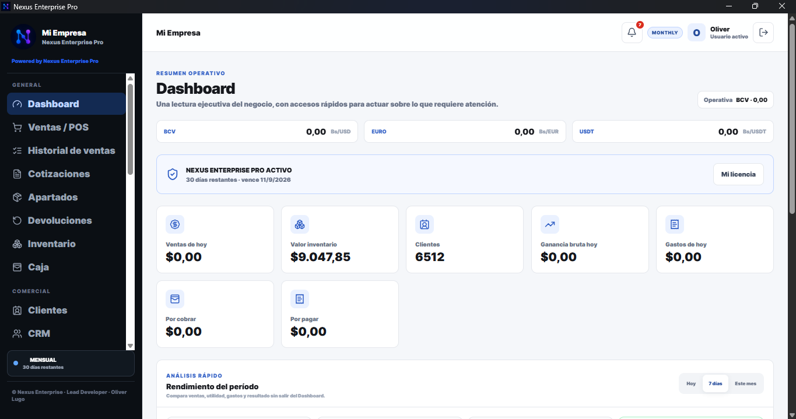
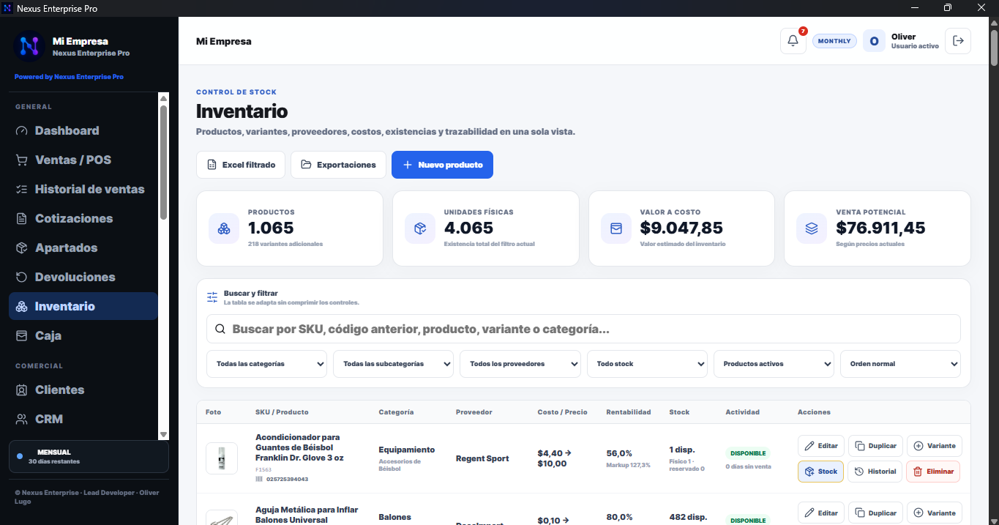

Velocidad operativa
POS, búsquedas bajo demanda, acciones rápidas y pantallas pensadas para trabajar sin fricción.
Vende, controla inventario, administra caja, clientes, compras, deudas, proveedores y decisiones con una experiencia creada para trabajar rápido, incluso cuando tu negocio crece.

Soluciones e implementaciones para operaciones reales


Nexus está diseñado alrededor del flujo real de una empresa: una venta cambia caja, inventario, utilidad, cliente, historial y decisiones en el mismo ecosistema.
POS, búsquedas bajo demanda, acciones rápidas y pantallas pensadas para trabajar sin fricción.
Dashboard, rentabilidad, cartera, gastos y análisis que convierten datos diarios en acciones.
Tu operación principal puede continuar localmente. La nube amplía capacidades sin volver frágil la caja.
Inventario, catálogo web y asistentes conectados pueden trabajar sobre la misma información autorizada.
Interfaz limpia, métricas útiles, filtros amplios, módulos conectados y una experiencia consistente en toda la operación.

Venta rápida, clientes, múltiples métodos de pago, envíos, apartados y trazabilidad.
SKU, códigos, costos, proveedores, tallas, colores, sabores, stock y rentabilidad.
Apertura, cierre, cobros, deudores, cuentas por pagar, gastos y movimientos auditables.
Historial comercial, seguimiento, postventa, saldos y contexto de cada cliente.
Compras con flete y costos extra, relaciones por proveedor y actualización de costos.
Indicadores operativos, tendencias, utilidad, cartera, gastos y documentos exportables.
Empieza con una instalación local. Evoluciona a múltiples terminales, Catálogo Cloud e integraciones cuando tu operación lo necesite.
Operación robusta en Windows, incluso cuando internet no es confiable.
Terminales conectadas a una operación central para caja, administración y crecimiento.
Publicación web, sincronización y canales digitales sobre la misma fuente de verdad.
En lugar de inventar reseñas, mostramos los beneficios que se validan durante las implementaciones. La sección está lista para incorporar testimonios verificables de clientes.
Inventario, ventas, clientes y caja dejan de vivir en archivos o herramientas separadas.
La información se actualiza una sola vez y los módulos conectados consumen el mismo dato.
Los responsables pueden leer cartera, stock, costos, utilidad y actividad desde una vista ejecutiva.
Cuéntanos cómo vendes, compras, cobras y controlas inventario. Diseñamos la implementación de Nexus alrededor de tu operación.